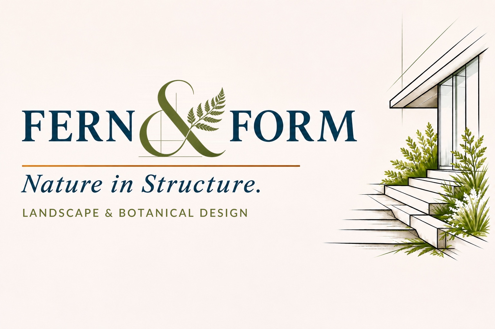

Residential Landscape Design
Thoughtfully designed front yards, backyards, private gardens, outdoor living spaces, and residential landscapes that balance functionality, beauty, and seasonal interest.

Landscape Design Studio
Fern & Form is an independent landscape design and environmental planning studio serving Southeast Michigan, creating thoughtful outdoor environments that balance nature, functionality, and architectural character.
With a multidisciplinary foundation in landscape architecture, agricultural engineering, and environmental planning, the studio specializes in residential landscapes, planting design, commercial landscape concepts, and sustainable outdoor spaces.
THE PORTFOLIO
Our portfolio reflects a diverse range of residential, civic, and environmental landscape projects, demonstrating an approach grounded in thoughtful design, site context, and environmental sensitivity.
INSIDE AND OUT
Inspired by each place and the people who use it, we bring plants and architecture together.
Thoughtfully designed front yards, backyards, private gardens, outdoor living spaces, and residential landscapes that balance functionality, beauty, and seasonal interest.
Planting plans, native and pollinator-friendly gardens, seasonal planting compositions, and sustainable planting strategies suited to Michigan’s climate and site conditions.

Landscape concepts and planting design for commercial properties, building entrances, office environments, retail spaces, and small business landscapes.

Conceptual site planning, AutoCAD drafting, planting plans, planting schedules, landscape presentation drawings, and design collaboration with architects, contractors, and other professionals.

CONCEPT IMAGERY
NATURE, WITH INTENTION
Fern & Form is an independent landscape design studio rooted in the belief that meaningful outdoor spaces emerge from a thoughtful relationship between nature, structure, and people.
Our approach combines creative landscape design, environmental awareness, and technical precision to create outdoor environments that are functional, sustainable, and visually distinctive.
From residential gardens and planting compositions to commercial landscapes and public-space concepts, each project is approached with sensitivity to its surroundings, purpose, and long-term character.
Nature in Structure.
Rana Mehdi
Founder | Landscape Designer
Rana Mehdi is a landscape designer and environmental planner with a Master’s degree in Landscape Architecture and more than seven years of professional experience in landscape design, environmental planning, and sustainable site development.
Her professional background includes residential, municipal, and environmental projects, with expertise in conceptual landscape design, site planning, planting and irrigation design, AutoCAD drafting, construction documentation, and GIS-based spatial analysis.
Her design approach combines creative vision with technical precision and environmental responsibility to create functional, sustainable, and meaningful outdoor spaces.
Through Fern & Form, Rana brings this experience and design philosophy to clients in Southeast Michigan, creating landscapes that respond thoughtfully to both people and place.
Fern & Form provides landscape design services throughout Metro Detroit, including Dearborn, Dearborn Heights, Westland, Canton, Livonia, and surrounding communities.
Remote landscape design collaboration is also available for selected projects.
LET'S CREATE SOMETHING THOUGHTFUL
Whether you are planning a new garden, reimagining an existing landscape, or developing an outdoor space for your business, Fern & Form would love to hear about your project.
Contact us to discuss your ideas and explore how we can bring your landscape vision to life.
MICHIGAN, USA

Share a few details and we’ll be in touch.